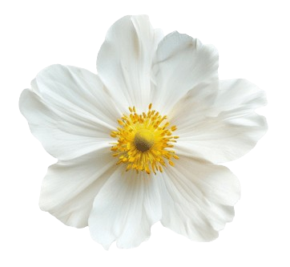
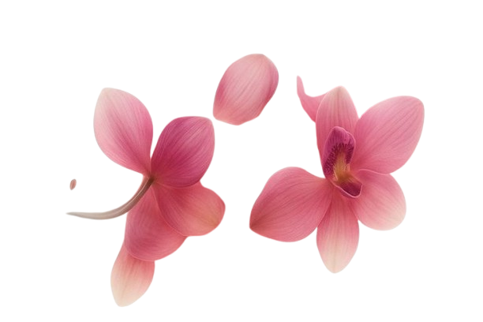
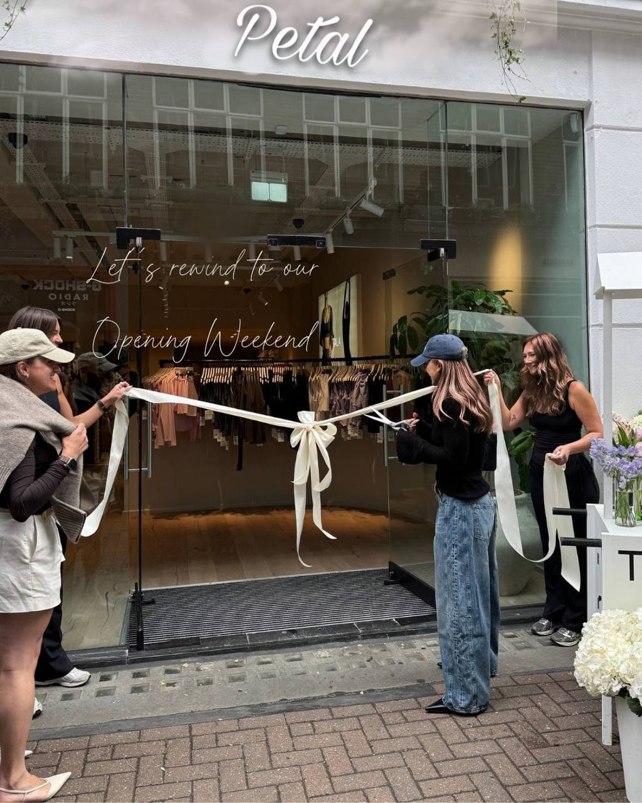
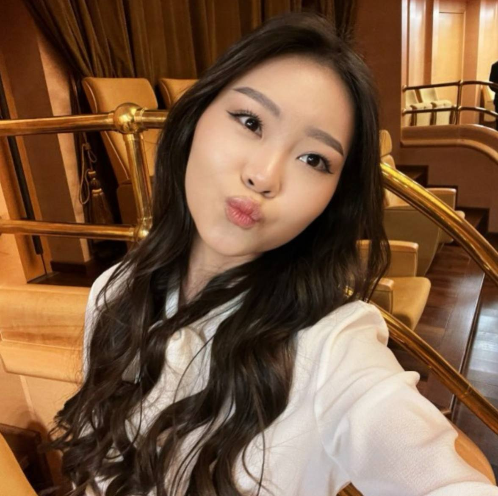

Zhanbota
Wedding Specialist
Zhabota has a soft spot for romantic aesthetics. She specializes in bridal bouquets and grand event florals.

Petal is a unique space where everyone can find the perfect combination of colors, flavors, and textures to create a cozy atmosphere in their home or occasion.
Our workshop was founded by four close friends who turned their shared passion for botany and design into a blooming reality. Together, we handcraft every arrangement with love and attention to detail.
explore collection
The four girls behind Petal. We are not just directors; we are the lead florists who design, arrange, and pack your bouquets.

Zhabota has a soft spot for romantic aesthetics. She specializes in bridal bouquets and grand event florals.
Saltanat is the master of colors. She mixes exotic blooms with classic flowers to create unique, bold compositions.

Passionate about eco-friendly design, Luiza creates stunning, long-lasting bouquets using dried and preserved flowers.
Akerke loves minimalism. She focuses on mono-bouquets and elegant structures that perfectly fit modern interiors.